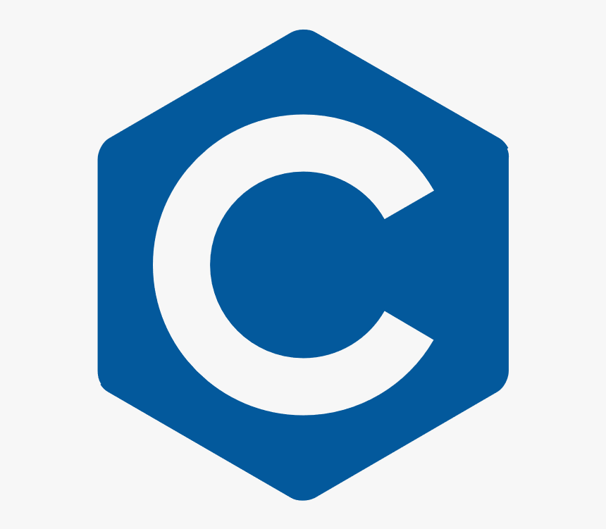
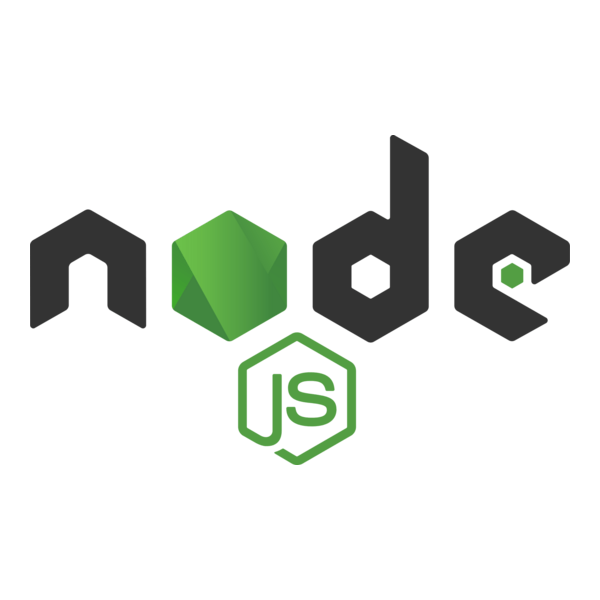
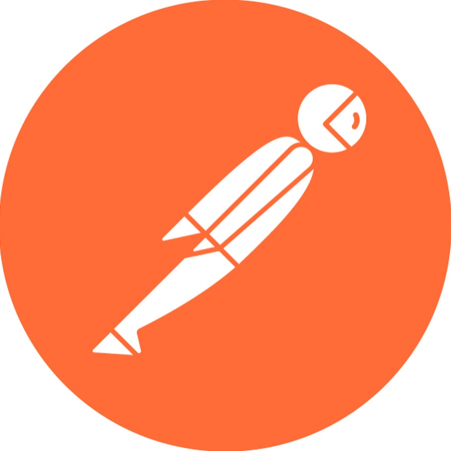
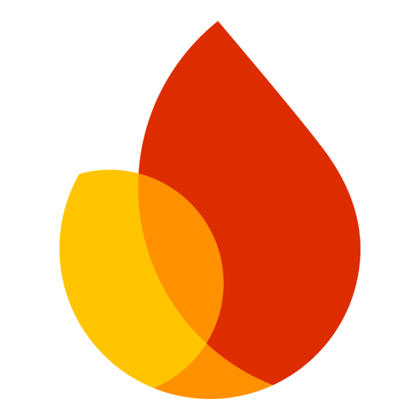
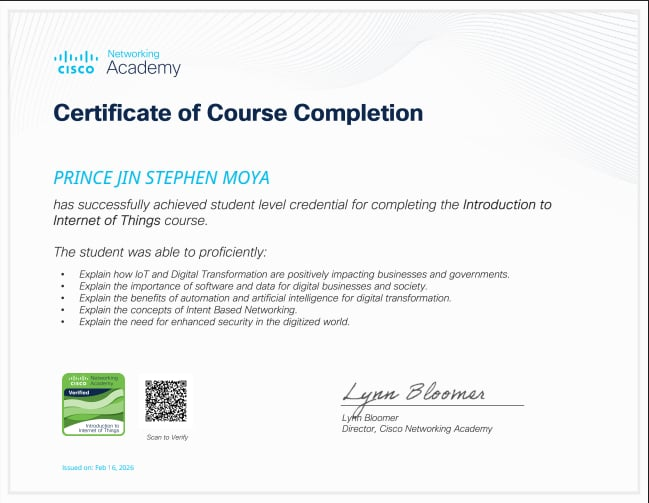
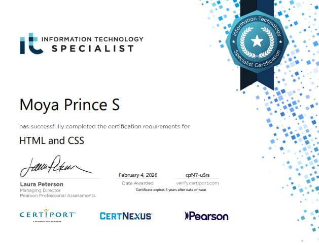
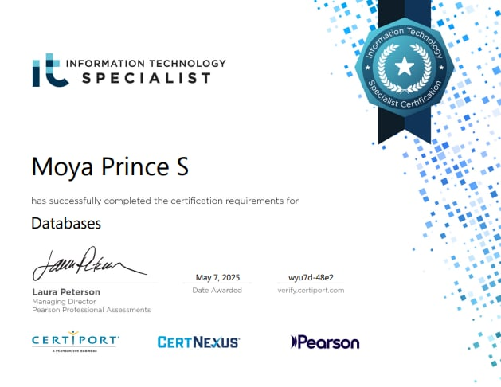

What I value
Being responsible, staying open to feedback, and doing my part to help a team complete its goals.
BSIT STUDENT · ASPIRING WEB DEVELOPER
Hi, I'm Prince Jin Stephen Moya. I'm a Bachelor of Science in Information Technology student developing my skills through academic projects, hands-on practice, and teamwork.
PRINCE M. · PORTFOLIO
I value steady progress, clear communication, and learning from every project.
GET TO KNOW ME
I am a fourth-year Bachelor of Science in Information Technology student. I am continuing to develop my technical skills through academic projects, hands-on practice, and collaboration with others.
Being responsible, staying open to feedback, and doing my part to help a team complete its goals.
My skills in software development, system testing, databases, and understanding how hardware and software work together.
To gain practical experience, keep improving, and contribute to useful technology solutions.
TOOLS & TECHNOLOGIES
A selection of programming languages, development tools, and database technologies I have encountered through learning and academic project work.
Programming and web languages
 CSS
CSS
 JavaScript
JavaScript

CDevelopment, frameworks, testing and deployment

Node.js
PostmanData storage and backend services

FirebaseSELECTED WORK
These projects reflect what I have learned so far. I aim to explain the purpose of each project and my contribution clearly.
An academic capstone project that combines a physical grain-drying prototype with a software application. The system involves humidity sensing, fan control, and application functions for account access and database integration.
I help inspect project materials, components, and the physical structure of the prototype. My responsibilities also include testing application functions, checking whether they behave as expected, identifying issues, reviewing system outputs, and reporting findings to the team for improvement. I also contribute to shared project responsibilities.
The physical prototype and wiring have been developed. Application and integration work is ongoing, including account creation, database functions, fan-speed control, and sensor integration.
Add real screenshots of the application here when they are ready. Do not publish placeholder images as actual project evidence.
Before final submission, add the approved full project title, confirmed objectives, actual screenshots, and verified test results that you are permitted to share.
A mobile application designed to help students organize their class schedules and view their timetables in daily and weekly formats.
I designed the application's user interface and created wireframes/mockups to plan screen layouts and the overall visual presentation.
Screenshots and demo materials are not currently available. They can be added here when actual project evidence is ready.
CERTIFICATES

Cisco Networking Academy

Certiport

Certiport
MILESTONES
This section will showcase awards, academic recognition, competitions, and other accomplishments you confirm.
Add verified academic awards, scholarships, or recognition when available.
Add actual competitions, conferences, or events you participated in.
Add relevant milestones that demonstrate your effort, growth, or contribution.
LET'S CONNECT
I'm open to learning opportunities, collaboration, and connecting with people who share an interest in technology.
My CV is available to view or download using the buttons in the home section. Project links will be added when available.